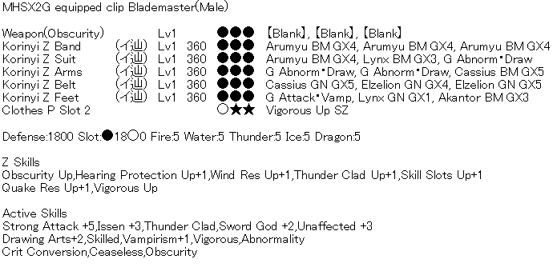
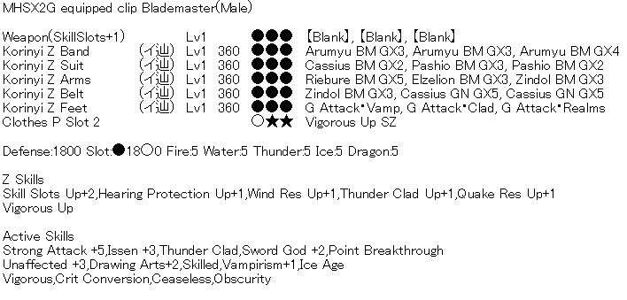
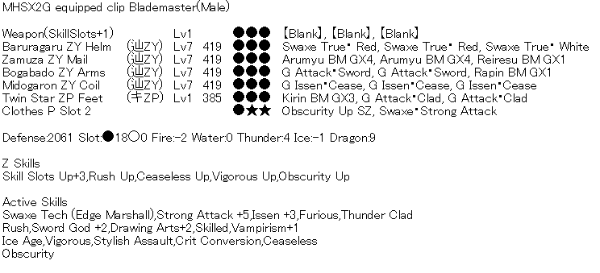
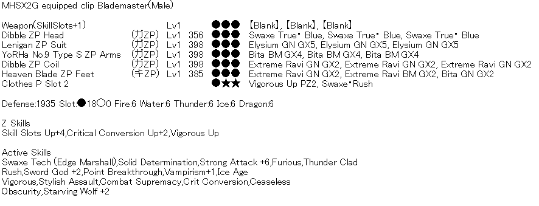
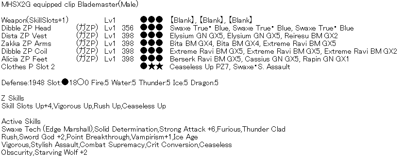
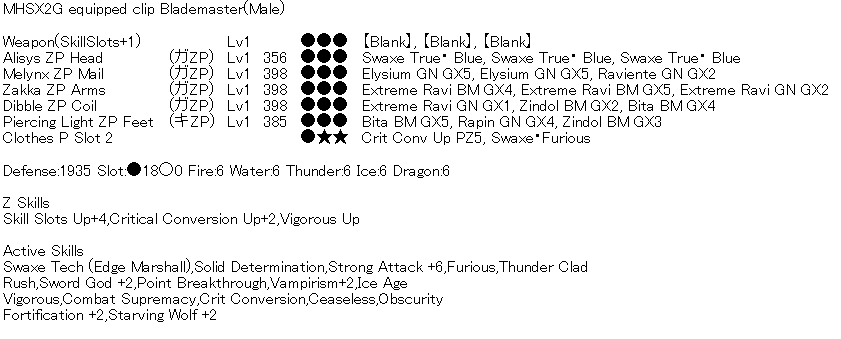
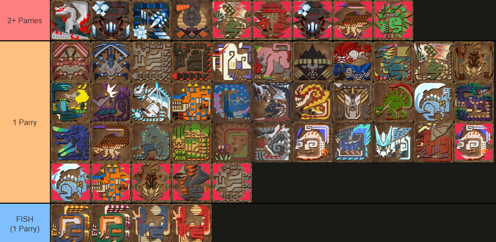

Hunting road is a theoretically infinite hunting simulation where you're fighting a different monster on each floor and are rewarded with so-called "Road points" (or in short RDP) that are used as a currency to buy equipment and other stuff in game.
This section will be divided into subsections where builds are presented for each individual Floor milestone (referred to as Fx where x is the floor count).
Starter Abnorm
Getting to Floor 11 and killing Fatalis should net you about half the required RDP for the set (assuming you spend NP to reduce the cost). If you aren't able to hit 55 all res prioritize getting 55 in Fire. *If you use the gravi swaxe with this set get an Obscurity Up SZ cuff instead of Vigorous Up SZ*

Weapon:
Guild Food: All Res +20
Poogie Skill: Status/Defence
SR Skills: All Res/Fire Res
Caravan Skills: Weapon Art (lg) / KO Technique (KO Phial ONLY) / Riser (lg)
Abnorm + Sigils
By using Festi decos we can free up the slots on our weapon for sigils. We lose a level of Strong Attack and Vamp but with 3 sigil slots it's easy to make back that 50 true raw and slot in some utility in the form of either an (SAF) Guard or (SAF) Stun. B sigil depending on which phial your Swaxe has. *If you use the gravi swaxe with this set get an Obscurity Up SZ cuff instead of Vigorous Up SZ*
Weapon:
Sigils:
Guild Food: All Res +20
Poogie Skill: Status/Defence
SR Skills: All Res/Fire Res
Caravan Skills: Weapon Art (lg) / KO Technique (KO Phial ONLY) / Riser (lg)
Baru Raw
Festi decos allow us to get Obscurity without farming new armor or having abnormality. Compared to the other F24+ set this set will have more damage per swing but will probably lose to poison on Zenith floors. This set has point break so make sure you focus your attacks on the same part of the monster to maximize your damage.
Weapon: Baru
Sigils: SAF Up/(SAF) Guard/Atk + All Atk + All Atk
Guild Food: All Res +20
Poogie Skill: Defence/Taijutsu
SR Skills: All Res/Fire Res
Caravan Skills: Weapon Art (lg) / Riser (lg)
Cheap ZY+10th armor Mix
I recommend finding a muso boga carry or doing the repel 3 times for the Rapin deco materials. Otherwise you can buy the materials with RDP from the shop.
Weapon: Any SSU Swaxe (Evo/Fransisca/Baru/etc)
Sigils:
Guild Food: All Res +20
Poogie Skill: Defence/Taijutsu
SR Skills: All Res/Fire Res or Ice Res (use road skill to cover the other resist)
Caravan Skills: Weapon Art (lg) / KO Technique (KO Phial ONLY) / Riser (lg)
Clearly the Best
This set ONLY works with the Apophis "Clear" Swaxe. Critical Conversion requires your weapon to have high natural affinity and lvl100 clear weapons have 100%. Normally Crit Con Up is mediocre but because it's always active and most floors are too short for most Z skills to activate it ends up being better.
Weapon: Apophis Axe "Clear" ONLY
Sigils: SAF Up/(SAF) Stun.B/Atk + Stun Value Atk + Z Atk OR All Atk
Guild Food: All Res +20
Poogie Skill: Defence
SR Skills: All Res/Any
Caravan Skills: Weapon Art (lg) / KO Technique
*YoRHa No.9 Type S ZP Arms are male only. Female hunters use the YoRHa No.2 Type B ZP Arms instead; they have the same stats and from the same gacha.
Non-Clear
If you have unlocked everything in the road shop but don't have or want to invest in a clear SAF you can use this set instead.
Weapon: Any SSU Swaxe (Evo/Fransisca/Baru/etc)
Sigils:
Guild Food: All Res +20
Poogie Skill: Defence
SR Skills: All Res/Any
Caravan Skills: Weapon Art (lg) / KO Technique (KO Phial ONLY) / Riser (lg)
Forti+2 Clear SAF Road Set
This set trades Stylish Assault for Fortification+2 to make certain matchups alot less deadly. With Fortification+2 you can parry Z Hypnoc sleep, Z Gravios beams, Zeru air fryer, etc.
Weapon: Apophis Axe "Clear" ONLY
Sigils: SAF Up/(SAF) Stun.B/Atk + Stun Value Atk Atk + Z Atk** OR All Atk
Guild Food: All Res +20
Poogie Skill: Defence
SR Skills: All Res/Any
Caravan Skills: Weapon Art (lg) / KO Technique
This section of the guide will contain extra relevant information beyond just sets such as, which monsters to pick/avoid, tips for maintaining phials, how Swaxe fits into the road 'meta', etc.
Certain monsters in road have scripted intros/death animations/phase transitions which you can parry for guaranteed phials. Every single monkey monster has a death animation you can parry at the end of the floor for free phials. Every single brute wyvern has a roar you can parry at the start of the floor.
Akura can be parried twice at the start. Start in axe mode, approach from the left side at about a 45 degree angle while extreme running, upwards slash the crystal then immediately fade backwards and parry. Start walking towards where the crystal was and then parry the digging animation. Here is a quick video guide on the intro.
White Fatalis phase 2 guarantees you at least 2 parries most of the time. Skipping Phase 1 means you lose out on these. (Up to you and your team if skipping is worth it.)
Z Espinas isn't scripted but teams that have an SnS support will usually farm antivenoms with flashes. Ask to be at the end of the "flash" order so you have more time to fish for parries.
Z Gasura dying before transforming into power mode means you only get 1 parry.
Gougarf if they don't die at the same time can both have their death animations parried.
Nargacuga will sometimes run away to phase transition before dying which nets you an extra parry.
Seregios will sometimes start the floor facing backwards while doing his intro roar. If this happens you won't be able to parry it.
Hitting the monster's corpse in axe mode will give you sword mode phials as long as the attack doesn't expend any axe mode phials (Alternate between forward lunge and side chops for optimal gains). You can consistently get enough phials for 3-4+ sword mode attacks after every floor. The time between returning to the shop floor after killing W.Fatalis is extremely long and you can usually get close to half your maximum phials just by hitting his corpse. Hitting the corpse of a monster also counts towards Furious.
Hitting HP locked monsters in axe mode. Certain monsters have moves that 'lock' their HP to 1+ meaning they cannot die until the lock ends. The Magnet Spike Pin attack also does this. If you are able to gauge the DPS of your party and predict that the Pin finisher will kill a monster you can swap to axe mode and hit the HP locked monster for meter to help kill the monster and retain/gain some more meter for the next floor.
First I will talk about the general road meta, the two main 'roles' and then I will talk about how Swaxe fits into everything. The road meta has 2 key ingredients: Damage (DPS) and Crowd Control (CC). DPS is self explanatory and CC is Paralysis/KO/Pin/etc. The idea is simple, chain CCs and DPS the monster down before you run out of CC. This lets you maintain buffs from Furious/Obscurity easier which makes you kill the monster faster.
A meta team composition will consist of 3 DPS and 1 Support. The two most common 'meta' teams you'll see people talk about are 3MS 1SNS or 2MS 1LBG 1SNS. SnS is the support in both teams, able to provide great paralysis and heal teammates to save carts. LBG can heal but trades the CC for much more damage and is usually considered a DPS that can heal. MS provides a ton of DPS as well as two forms of CC which is why it's the most common DPS pick.
So, how does Swaxe fit into the road meta? Well, despite relying on parries in a gamemode that favors making sure the monster doesn't move, it's really good! With end game gear Swaxe is arguably one of the best non-meta picks for road. Using CS+SW, A maxed Ravi Clear, stun boosting sigils and, spamming Absolute Release and Discharge we're able to provide good DPS and KO.
Absolute Release Blast (ARB) is the strongest attack in the Swaxe kit*. It gets compared to MS Pin because they are the most powerful attacks in each weapons kit. ARB deals a lot of damage and KO buildup but leaves us vulnerable during the animation. ARB is also 'spammable', only being limited by your phials. Not only that, the total stun buildup on just the final hit is 220 with Stun.B sigil. This is more KO than a lvl5 hammer charge if all hits connect (assuming no hammer active weapon feature).
Discharge is a cheaper, faster and smaller explosion we can use that deals less KO and slightly less damage. It's good when you can't safely commit to ARB or you know the monster is gonna die anyways.
Important to note about Absolute Release Blast and Discharge is that these attacks target the best hitzone out of all the hitzones within the blast radius. For example, if you landed ARB on a Zenith Rathalos and hit all the body parts the damage will be dealt to the head since that is the best value.
*ARB total MV (w/ double swing+spin combo) = 532 (774) w/ Power Phial, 487 (708) w/ Other Phial
**ARB total KO (w/ double swing+spin combo) = 299 (416) (requires KO phials, (SAF) Stun.B sigil, KO Value sigil, KO Technique caravan skill and entire combo hitting the head)
In normal road a party of 4 hunters with maxed out gear will kill pretty much everything except for Z4 Boga and White Fatalis before most Z skills have a chance to activate. Critical Conversion UP (CCU) becomes good but only if you have a "Clear" evolution weapon due the 100% natural affinity and CCU converting that into 50 true raw with 100% uptime. You can get CCU twice for a total +100 true raw. In most situations this is not great but when combat usually lasts 60 seconds or less and alot of buffs reset in between it's actually pretty good.
These skills are found in the Korinyi armor sets and are good as 'training wheels' to help you learn the parry/fade slash timings of attacks without getting punished for messing up. Once you are familiar with the monsters and are better at parrying/fade slashing these skills become useless.
After clearing a floor you spawn with your weapon sheathed which resets Rush. Getting Rush Up to activate requires 21 parries (tested in-game) or approximately 2727(27+1350+1350) total MV worth of attacks on the monster. This can be a mix of parries or attacks but parries are faster than everything other than the blasts from discharge and absolute release blast. Most monsters are going to be dead by the time you get to stage 2 or just after.
Ceaseless Up requires 44 hits for Swaxe to activate stage 3. Most monsters other than Fatalis are gonna be dead before you get 44 hits in with an endgame party. You will activate Ceaseless stage 2 faster by only needing 27 hits instead of 36 but that is still near the end of most fights. Essentially, if you have this skill it's fine but not having it doesn't make a big difference.
There aren't many scripted intros for monsters on normal road that have an unblockable and every Stylish Assault proc could be a parry that refills your phials. Generally you are going to want to parry attacks unless you are close to maximum phials in which case it doesn't really matter. Unless the monster gets loose from the CC chain it is highly unlikely you will ever see maximum stacks of this in normal road.
Ideally the monster never gets to move which means you never get to parry outside of scripted situations. Reflect is expensive, you want to have Reflect+3 (20 skill points), Reflect Up AND Perfect Defense Large (PD). PD requires you to have stamina before it activates which means you can't use it with CS+SW. Even if you have stamina this means you have to forgo KO Tech or some weapon art for your Caravan skills. You also have to fit 20 skill points and a Z skill into the set, which means you have to sacrifice a lot to make it fit.